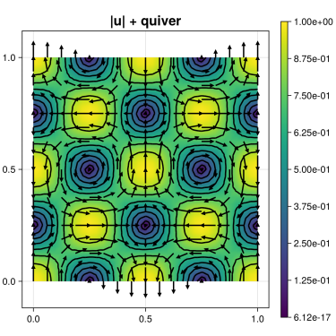

210 : Navier-Stokes Problem
Consider the Navier-Stokes problem that seeks $u$ and $p$ such that
\[\begin{aligned} - \mu \Delta u + (u \cdot \nabla) u + \nabla p &= f\\ \mathrm{div}(u) & = 0. \end{aligned}\]
The weak formulation seeks $u \in V := H^1_0(\Omega)$ and $p \in Q := L^2_0(\Omega)$ such that
\[\begin{aligned} \mu (\nabla u, \nabla v) + ((u \cdot \nabla) u, v) - (p, \mathrm{div}(v)) & = (f, v) & \text{for all } v \in V\\ (q, \mathrm{div}(u)) & = 0 & \text{for all } q \in Q\\ \end{aligned}\]
This example computes a planar lattice flow with inhomogeneous Dirichlet boundary conditions (which requires some modification above). Newton's method with automatic differentation is used to handle the nonlinear convection term.
The computed solution for the default parameters looks like this:

module Example210_LowLevelNavierStokes
using ExtendableFEMBase
using ExtendableGrids
using ExtendableSparse
using GridVisualize
using ForwardDiff
using DiffResults
# data for Poisson problem
const μ = 1e-2
function f!(fval, x, t) # right-hand side
fval[1] = 8.0 * π * π * μ * exp(-8.0 * π * π * μ * t) * sin(2.0 * π * x[1]) * sin(2.0 * π * x[2])
fval[2] = 8.0 * π * π * μ * exp(-8.0 * π * π * μ * t) * cos(2.0 * π * x[1]) * cos(2.0 * π * x[2])
return nothing
end
# exact velocity (for boundary data and error calculation)
function u!(uval, qpinfo)
x = qpinfo.x
t = qpinfo.time
uval[1] = exp(-8.0 * π * π * μ * t) * sin(2.0 * π * x[1]) * sin(2.0 * π * x[2])
uval[2] = exp(-8.0 * π * π * μ * t) * cos(2.0 * π * x[1]) * cos(2.0 * π * x[2])
return nothing
end
# exact pressure (for error calculation)
function p!(pval, qpinfo)
x = qpinfo.x
t = qpinfo.time
pval[1] = exp(-16 * pi * pi * μ * t) * (cos(4 * pi * x[1]) - cos(4 * pi * x[2])) / 4
return nothing
end
function main(; nref = 5, teval = 0, order = 2, Plotter = nothing)
@assert order >= 2
# create grid
X = LinRange(0, 1, 2^nref + 1)
Y = LinRange(0, 1, 2^nref + 1)
println("Creating grid...")
@time xgrid = simplexgrid(X, Y)
# create FESpace
println("Creating FESpace...")
FETypes = [H1Pk{2, 2, order}, H1Pk{1, 2, order - 1}]
@time FES = [FESpace{FETypes[1]}(xgrid; name = "velocity space"),
FESpace{FETypes[2]}(xgrid; name = "pressure space")]
FES
# solve
sol = solve_stokes_lowlevel(FES; teval = teval)
# move integral mean of pressure
pmean = sum(compute_error(sol[2], nothing, order, 1))
for j ∈ 1:sol[2].FES.ndofs
sol[2][j] -= pmean
end
# calculate l2 error
error_u = sqrt(sum(compute_error(sol[1], u!, 2)))
error_p = sqrt(sum(compute_error(sol[2], p!, 2)))
println("\nl2 error velo = $(error_u)")
println("l2 error pressure = $(error_p)")
# plot
plt = GridVisualizer(; Plotter = Plotter, layout = (1, 1), clear = true, resolution = (500, 500))
scalarplot!(plt[1, 1], xgrid, nodevalues(sol[1]; abs = true)[1, :]; title = "|u| + quiver", Plotter = Plotter)
vectorplot!(plt[1, 1], xgrid, eval_func_bary(PointEvaluator([(1, Identity)], sol)), clear = false)
return sol, plt
end
# computes error and integrals
function compute_error(uh::FEVectorBlock, u, order = get_polynomialorder(get_FEType(uh), uh.FES.xgrid[CellGeometries][1]), p = 2)
xgrid = uh.FES.xgrid
FES = uh.FES
EG = xgrid[UniqueCellGeometries][1]
ncomponents = get_ncomponents(uh)
cellvolumes = xgrid[CellVolumes]
celldofs = FES[CellDofs]
error = zeros(Float64, ncomponents, num_cells(xgrid))
uhval = zeros(Float64, ncomponents)
uval = zeros(Float64, ncomponents)
L2G = L2GTransformer(EG, xgrid, ON_CELLS)
QP = QPInfos(xgrid)
qf = VertexRule(EG, order)
FEB = FEEvaluator(FES, Identity, qf)
function barrier(L2G::L2GTransformer)
for cell in 1:num_cells(xgrid)
update_trafo!(L2G, cell)
update_basis!(FEB, cell)
for (qp, weight) in enumerate(qf.w)
# evaluate uh
fill!(uhval, 0)
eval_febe!(uhval, FEB, view(view(uh), view(celldofs, :, cell)), qp)
# evaluate u
if u !== nothing
fill!(uval, 0)
eval_trafo!(QP.x, L2G, qf.xref[qp])
u(uval, QP)
end
# evaluate error
for d ∈ 1:ncomponents
error[d, cell] += (uhval[d] - uval[d]) .^ p * cellvolumes[cell] * weight
end
end
end
end
barrier(L2G)
return error
end
function solve_stokes_lowlevel(FES; teval = 0)
println("Initializing system...")
sol = FEVector(FES)
A = FEMatrix(FES)
b = FEVector(FES)
@time update_system! = prepare_assembly!(A, b, FES[1], FES[2], sol)
@time update_system!(true, false)
Alin = deepcopy(A) ## = keep linear part of system matrix
blin = deepcopy(b) ## = keep linear part of right-hand side
println("Prepare boundary conditions...")
@time begin
u_init = FEVector(FES)
interpolate!(u_init[1], u!; time = teval)
fixed_dofs = [size(A.entries, 1)] # fix one pressure dof = last dof
BFaceDofs::Adjacency{Int32} = FES[1][ExtendableFEMBase.BFaceDofs]
nbfaces::Int = num_sources(BFaceDofs)
AM::ExtendableSparseMatrix{Float64, Int64} = A.entries
dof_j::Int = 0
for bface ∈ 1:nbfaces
for j ∈ 1:num_targets(BFaceDofs, 1)
dof_j = BFaceDofs[j, bface]
push!(fixed_dofs, dof_j)
end
end
push!(fixed_dofs, FES[1].ndofs + 1) ## fix one pressure dof
end
for it ∈ 1:20
# solve
println("\nITERATION $it\n=============")
println("Solving linear system...")
@time copyto!(sol.entries, A.entries \ b.entries)
res = A.entries.cscmatrix * sol.entries .- b.entries
for dof in fixed_dofs
res[dof] = 0
end
linres = norm(res)
println("linear residual = $linres")
fill!(A.entries.cscmatrix.nzval, 0)
fill!(b.entries, 0)
println("Updating linear system...")
@time begin
update_system!(false, true)
A.entries.cscmatrix += Alin.entries.cscmatrix
b.entries .+= blin.entries
end
# fix boundary dofs
for dof in fixed_dofs
AM[dof, dof] = 1e60
b.entries[dof] = 1e60 * u_init.entries[dof]
end
ExtendableSparse.flush!(A.entries)
# calculate nonlinear residual
res = A.entries.cscmatrix * sol.entries .- b.entries
for dof in fixed_dofs
res[dof] = 0
end
nlres = norm(res)
println("nonlinear residual = $nlres")
if nlres < max(1e-12, 20 * linres)
break
end
end
return sol
end
function prepare_assembly!(A, b, FESu, FESp, sol; teval = 0)
A = A.entries
b = b.entries
sol = sol.entries
xgrid = FESu.xgrid
EG = xgrid[UniqueCellGeometries][1]
FEType_u = eltype(FESu)
FEType_p = eltype(FESp)
L2G = L2GTransformer(EG, xgrid, ON_CELLS)
cellvolumes = xgrid[CellVolumes]
ncells::Int = num_cells(xgrid)
# dofmap
CellDofs_u = FESu[ExtendableFEMBase.CellDofs]
CellDofs_p = FESp[ExtendableFEMBase.CellDofs]
offset_p = FESu.ndofs
# quadrature formula
qf = QuadratureRule{Float64, EG}(3 * get_polynomialorder(FEType_u, EG) - 1)
weights::Vector{Float64} = qf.w
xref::Vector{Vector{Float64}} = qf.xref
nweights::Int = length(weights)
# FE basis evaluator
FEBasis_∇u = FEEvaluator(FESu, Gradient, qf)
∇uvals = FEBasis_∇u.cvals
FEBasis_idu = FEEvaluator(FESu, Identity, qf)
iduvals = FEBasis_idu.cvals
FEBasis_idp = FEEvaluator(FESp, Identity, qf)
idpvals = FEBasis_idp.cvals
# prepare automatic differentation of convection operator
function operator!(result, input)
# result = (u ⋅ ∇)u
result[1] = input[1] * input[3] + input[2] * input[4]
result[2] = input[1] * input[5] + input[2] * input[6]
end
result = Vector{Float64}(undef, 2)
input = Vector{Float64}(undef, 6)
tempV = zeros(Float64, 2)
Dresult = DiffResults.JacobianResult(result, input)
cfg = ForwardDiff.JacobianConfig(operator!, result, input, ForwardDiff.Chunk{6}())
jac = DiffResults.jacobian(Dresult)
value = DiffResults.value(Dresult)
# ASSEMBLY LOOP
function barrier(EG, L2G::L2GTransformer, linear::Bool, nonlinear::Bool)
# barrier function to avoid allocations caused by L2G
ndofs4cell_u::Int = get_ndofs(ON_CELLS, FEType_u, EG)
ndofs4cell_p::Int = get_ndofs(ON_CELLS, FEType_p, EG)
Aloc = zeros(Float64, ndofs4cell_u, ndofs4cell_u)
Bloc = zeros(Float64, ndofs4cell_u, ndofs4cell_p)
dof_j::Int, dof_k::Int = 0, 0
fval::Vector{Float64} = zeros(Float64, 2)
x::Vector{Float64} = zeros(Float64, 2)
for cell ∈ 1:ncells
# update FE basis evaluators
update_basis!(FEBasis_∇u, cell)
update_basis!(FEBasis_idu, cell)
update_basis!(FEBasis_idp, cell)
# assemble local stiffness matrix (symmetric)
if (linear)
for j ∈ 1:ndofs4cell_u, k ∈ 1:ndofs4cell_u
temp = 0
for qp ∈ 1:nweights
temp += weights[qp] * dot(view(∇uvals, :, j, qp), view(∇uvals, :, k, qp))
end
Aloc[k, j] = μ * temp
end
# assemble div-pressure coupling
for j ∈ 1:ndofs4cell_u, k ∈ 1:ndofs4cell_p
temp = 0
for qp ∈ 1:nweights
temp -= weights[qp] * (∇uvals[1, j, qp] + ∇uvals[4, j, qp]) *
idpvals[1, k, qp]
end
Bloc[j, k] = temp
end
Bloc .*= cellvolumes[cell]
# assemble right-hand side
update_trafo!(L2G, cell)
for j ∈ 1:ndofs4cell_u
# right-hand side
temp = 0
for qp ∈ 1:nweights
# get global x for quadrature point
eval_trafo!(x, L2G, xref[qp])
# evaluate (f(x), v_j(x))
f!(fval, x, teval)
temp += weights[qp] * dot(view(iduvals, :, j, qp), fval)
end
# write into global vector
dof_j = CellDofs_u[j, cell]
b[dof_j] += temp * cellvolumes[cell]
end
end
# assemble nonlinear term
if (nonlinear)
for qp ∈ 1:nweights
fill!(input, 0)
for j ∈ 1:ndofs4cell_u
dof_j = CellDofs_u[j, cell]
for d ∈ 1:2
input[d] += sol[dof_j] * iduvals[d, j, qp]
end
for d ∈ 1:4
input[2+d] += sol[dof_j] * ∇uvals[d, j, qp]
end
end
# evaluate jacobian
ForwardDiff.chunk_mode_jacobian!(Dresult, operator!, result, input, cfg)
# update matrix
for j ∈ 1:ndofs4cell_u
# multiply ansatz function with local jacobian
fill!(tempV, 0)
for d ∈ 1:2
tempV[1] += jac[1, d] * iduvals[d, j, qp]
tempV[2] += jac[2, d] * iduvals[d, j, qp]
end
for d ∈ 1:4
tempV[1] += jac[1, 2+d] * ∇uvals[d, j, qp]
tempV[2] += jac[2, 2+d] * ∇uvals[d, j, qp]
end
# multiply test function operator evaluation
for k ∈ 1:ndofs4cell_u
Aloc[k, j] += dot(tempV, view(iduvals, :, k, qp)) * weights[qp]
end
end
# update rhs
mul!(tempV, jac, input)
tempV .-= value
for j ∈ 1:ndofs4cell_u
dof_j = CellDofs_u[j, cell]
b[dof_j] += dot(tempV, view(iduvals, :, j, qp)) * weights[qp] * cellvolumes[cell]
end
end
end
# add local matrices to global matrix
Aloc .*= cellvolumes[cell]
for j ∈ 1:ndofs4cell_u
dof_j = CellDofs_u[j, cell]
for k ∈ 1:ndofs4cell_u
dof_k = CellDofs_u[k, cell]
rawupdateindex!(A, +, Aloc[j, k], dof_j, dof_k)
end
if (linear)
for k ∈ 1:ndofs4cell_p
dof_k = CellDofs_p[k, cell] + offset_p
rawupdateindex!(A, +, Bloc[j, k], dof_j, dof_k)
rawupdateindex!(A, +, Bloc[j, k], dof_k, dof_j)
end
end
end
fill!(Aloc, 0)
fill!(Bloc, 0)
end
end
function update_system!(linear::Bool, nonlinear::Bool)
barrier(EG, L2G, linear, nonlinear)
flush!(A)
end
update_system!
end
function generateplots(dir = pwd(); Plotter = nothing, kwargs...)
~, plt = main(; Plotter = Plotter, kwargs...)
scene = GridVisualize.reveal(plt)
GridVisualize.save(joinpath(dir, "example210.svg"), scene; Plotter = Plotter)
end
end #moduleThis page was generated using Literate.jl.